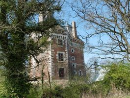
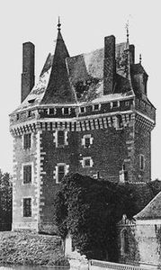
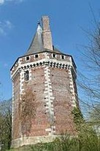
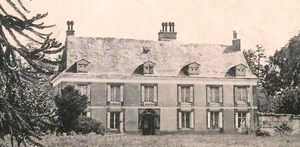

Recensement Jean-Claude Truffet
| Département | 27 — Eure |
| Canton | Bernay |
| Commune | Thevray |
| Type d'édifice | Château |
| Période d'origine | XV-XVII |
| Coordonnées GPS | 48° 58' 49" Nord, 0° 47' 00" Est |




THEVRAY, la première mention écrite fait remonter lorigine d'une importante seigneurie depuis le XIIe siècle. Après la construction d'un premier site de défense, la guerre de Cent Ans marque un important tournant pour le site car les Anglais mettent le feu au premier château. En 1440, ce n'est plus qu'un amas de ruine qui est relevé par Jean III de Chambray. Mais c'est l'un de ses enfants, Jacques de Chambray, seigneur de Thevray, qui en 1489 fit bâtir un château fortifié , seigneur de Thevray, chevalier de l'Ordre du roi, chambellan du roi de France, grand bailli et gouverneur d'Évreux (1498) - Meurt un 4 mars 1504. Propriété de la marquise de la Boulaye de Thévray. Tour de Thevray Logo M.H. Classée MH (1886): site à motte et basse-cour entourées de fossés en eau. Jacques de Chambray, grand bailli et gouverneur d'Évreux, remplaça à la fin du XVe siècle la motte originelle par une tour-résidence octogonale, flanquée vers la basse-cour d'un avant-corps rectangulaire abritant à sa base le pont-levis à flèches. La construction en grès, brique, d'utilisation rare dans la région à l'époque, et silex a donc la forme d'une tour octogonale dominée par un toit polygonal en forme d'éteignoir, prolongée par une aile rectangulaire surmontée d'un toit en fer de hache. Les mâchicoulis et l'existence du pont-levis montrent qu'il s'agit là d'un lieu de défense.
THEVRAY La légende veut que, se souvenant des attaques passées, il édifia une tour destinée à le protéger. Ses murs élevés forment un polygone régulier avec avant-corps carré tourné vers l'intérieur de l'enceinte. Certains documents et gravures mettent en avant la présence d'un ancien château, d'époque XVIIe siècle, au nord de l'enceinte et potentiellement situé à l'extérieur de l'enceinte. Seules des sondages ou études archéologiques pourraient confirmer ces éléments. Depuis le haut de la Tour, il est possible de voir l'ensemble de la campagne alentour en utilisant un couloir de garde. La tour de Thevray est un site remarquable, situé au sein d'une enceinte faite de douves en haut, avec des communs d'une très belle qualité architecturale. D'un ancien colombier en bauge, situé à l'Est des douves, il ne reste hélas que les bases mais à l'Ouest, on trouve encore un bâtiment de grange à galandage en briques. Éléments protégés MH : la tour de Thevray : classement par arrêté du 12 juillet 1886. A trois K.M. à L'Est à AJOU le COUDRAY est un manoir au lieu-dit le Mesnil-Lucas à Ajou, C'est un manoir construit au XVIIe et XVIIIe siècle. Il possède des douves, un colombier, une cour, une écurie, une grange, un pressoir à cidre et un four à pain. Quart de fief de Haubert depuis 1208. Le logis date en partie du XVIIe siècle. Les bâtiments agricoles remontent aux XVIIe et XVIIIe siècle. Le colombier détruit figure sur le cadastre de 1834. Les douves sont largement comblées. Le manoir du Coudray est privé et fermé au public.
Jacques de Chambray,
"
Thevray grav-1-2-3 Coudray grav-4 GPS : 48° 58' 49" Nord, 0° 47' 00" Est